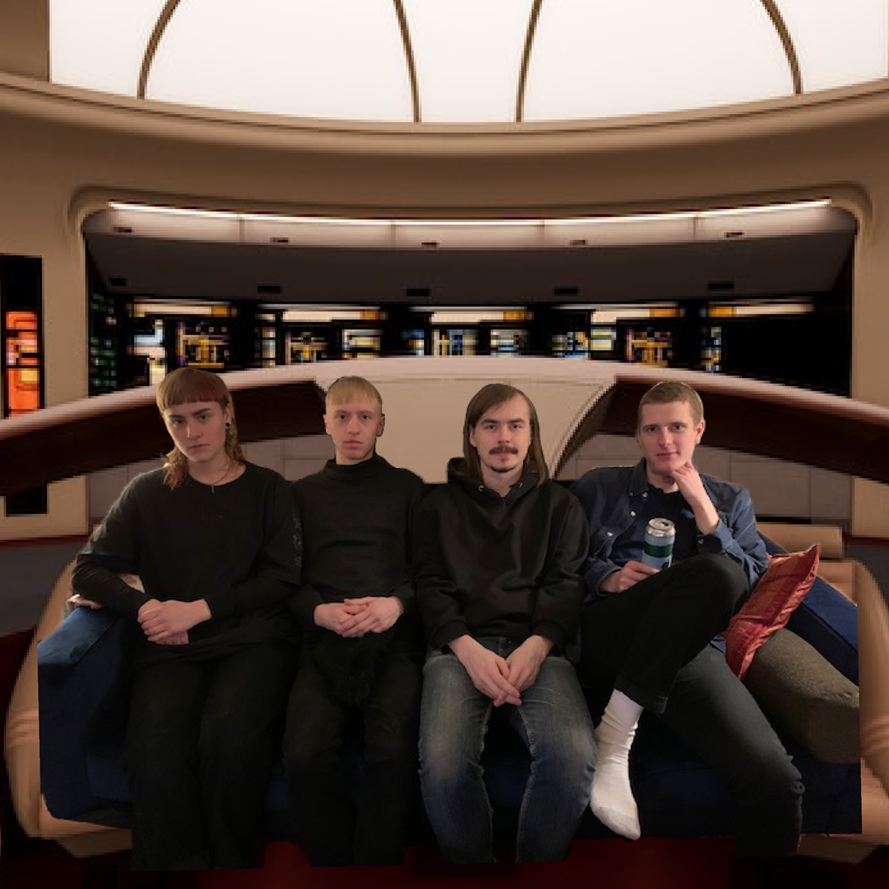

Bio
Montreal's Sunforger, formed from the fertile grounds of their previous project Mono No Aware, are equal parts Chapel Hill indie rock, post-punk and grunge-stalgia, with infinitely hummable choruses blossoming from the smartly planted seeds of patient build-ups, dissonance and surprising start-stops.
Press
Sunforger’s spindly mixture of post-grunge, emo and slowcore is rooted in cohesion and nuance. Its lyrics are mantric and its melodies stick. Mono No Aware is downtuned and downcast, filled with melancholic musings on consciousness, death and what happens in between.
- Patrick Pilch via Post-Trash. read the full review here.